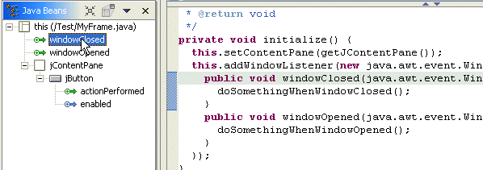
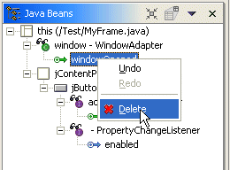

You can use the Java Beans view to delete an event that you added to a component in the visual editor for Java.
To delete an event from a component, do one of the following:
- In the Java Beans view, right-click the event and select Delete from
the context pop-up menu.
- In Show Events mode, this will remove from the
Java source the callback method for the event. If the listener class
implements an interface that requires a method body for compilation, then
the method contents are cleared out, rather than removing the method entirely.

If after you delete the callback method there are no remaining method body implementations on the listener and if the listener is an anonymous inner class, then the listener itself is removed with the method that registers it with the source. In the previous example, the Window listener only has a windowOpened callback, so when windowOpened is deleted the listener and the addWindowListener(...) statement that adds it to the source will be removed.
- In Expert Events mode, when a callback method is
deleted it is removed from the listener, or replaced with an empty method
body if the listener implements the interface and must have a method to successfully
compile. Unlike in Show Events mode, no cascaded
delete of the listener is done, so even if the listener has no remaining callback
method bodies left is it not automatically removed.
Delete in Expert Events mode can be thought of as deleting the selected tree item from its parent.
The listener itself can also be selected and deleted. This will remove the listener from the Java Bean. If the listener is an anonymous inner class it will be removed from the source. However, for a name listener class it will still remain after it has been removed from Java beans that use it.

- In Show Events mode, this will remove from the
Java source the callback method for the event. If the listener class
implements an interface that requires a method body for compilation, then
the method contents are cleared out, rather than removing the method entirely.